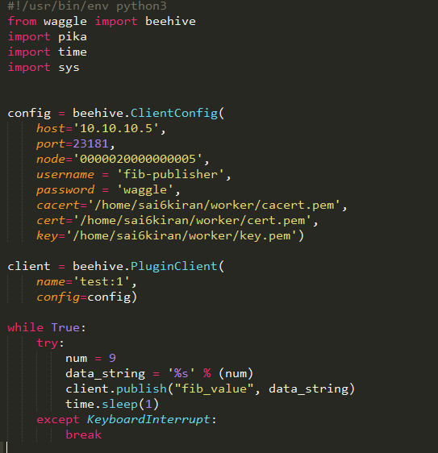
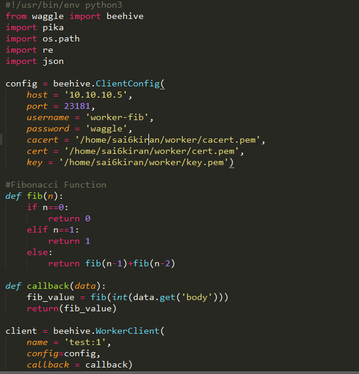

Welcome to VNE!¶
This is the Documentation of: The Virtual Node Environment!
What is VNE?
This is a tool created to implement and deploy virtual nodes to run various processes and plugins. This documentation does not tell you how to create these nodes but will
explain how to use them. Using this documentation, tutorials provided below and and the existing virtual nodes, you can create various plugins that will test your software,
through a publisher script, and will enable you create various workers that can process and handle various i/o of the plugin, thus sending you the resulting data output.
Furthermore, these workers can be modified to run at the back-end of the beehive server permanently for future use. The following sections below will explain on how to install
the corresponding packages and dependencies, and to implement your own publisher and worker scripts to test your respective software in beehive-dev.
How to use VNE
VNE mainly comprises of two scripts, you the developer, must implement. The publisher script and the worker script. Below is a diagram illustrating a model of how the end-to-end communication takes place between a publisher and a consumer/database.
Creating the
Publisher script:
Publisher script:
The publisher is the main script used to create your plugin in order to send and test your software.
Below is the link of a step-by-step tutorial to create publisher script:
Publisher Script Module
Creating the
Worker Script:
Worker Script:
The worker script is the script you create to process and manipulate your software through beehive-dev.
Below is the link of a step-by-step tutorial to create worker script:
Worker Script Module
Outcome of VNE
The data sent by your plugin is sent to db-raw at: http://10.10.10.5/?all=true
The processed data, done by worker script, is sent to db-decoded to: http://10.10.10.5/?all=true
The following output data is in the form of a file that can be downloaded from the website. This website is beehive-dev's web interface.
Sample Use of VNE
The following section will display a sample plugin script and worker used to send and process data through communication with beehive-dev.
The following code demonstrates a simple fibonacci program that runs within beehive-dev and computes the fibonacci number of any data, in the form of a number, sent through the plugin.
Sample
Publisher script:

Publisher script:
The publisher script is the main script used to send a number to rabbimq server --> to beehive-dev as a message requesting for it's fibonacci value.
Sample
Worker Script:

Worker Script:
The worker script is the script used to compute the fibonacci value of the number sent by the
publisher.
......
RabbitMQ Tutorials: https://www.rabbitmq.com/getstarted.html
Github Repo to run the above sample scripts:Virtual-Node-Environment-Github-Repo